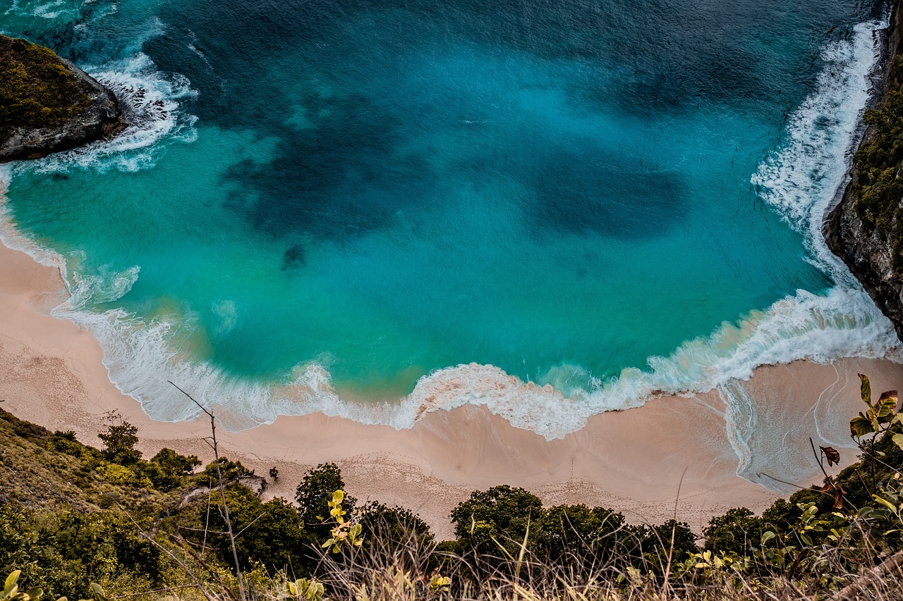

Sightseeing in Taniti

Beaches at Yellow Leaf Bay
Taniti City wraps around Yellow Leaf Bay, where visitors can relax on soft white-sand beaches, swim in crystal-clear waters, and enjoy gentle waves perfect for all ages.

Volcanoes
Take a guided tour into the mountainous interior to view Taniti’s active volcano. It’s a safe and fascinating way to learn about the island’s natural history and see panoramic views.
Rainforest Hiking
Explore lush jungle trails and experience Taniti’s incredible biodiversity firsthand. Guided hikes are available for beginners and experienced adventurers alike.